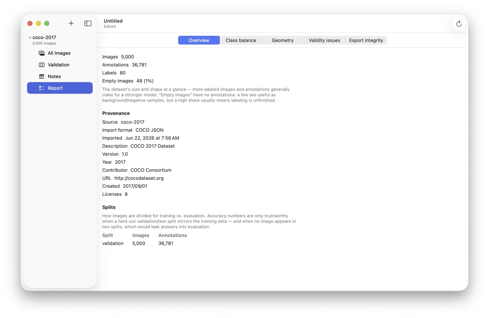

Analyze Annotations
A fast, on-device check over a project that highlights the kinds of mistakes that hurt a training set, before you train on them.
Open the report from the project's Report row in the sidebar, or File ▸ Analyze Annotations…. It's split into sections you switch between at the top, each pairing a short explanation with charts. Click a chart bar to see just those images in the list.

The sections
- Overview: image, annotation, and label counts, how many images are empty, and the split breakdown.
- Class Balance: per-label counts and how skewed (or unlabeled) the classes are.
- Geometry: image sizes and aspect ratios (so you can plan a consistent resize), plus box-size and aspect-ratio spreads, outliers, and where objects sit in the frame. A center bias can train models to overweight the middle of the image.
- Validity Issues: the per-annotation findings, grouped by check.
- Export Integrity: problems that might block or corrupt an export.
What it checks
Each finding is Info (often intentional), Warning (probably a mistake), or Error (invalid or export-blocking):
- Boxes: out-of-bounds, zero-area, very tiny, extreme aspect ratios, or heavily-overlapping duplicates.
- Polygons: fewer than three points, an oversized vertex count (usually a machine-traced outline; a Simplify fix is offered), or a saved box that doesn't match the outline (often intentional, flagged for review only).
- Images: no annotations (negatives are fine, and a marked-null ∅ image counts as confirmed), a missing pixel size, a duplicated name, or a near-duplicate of another image caught by perceptual hashing. A near-duplicate in a different split is flagged as data leakage, which inflates every score.
- Labels: annotations with no label, which every export format drops.
- Files (opt-in, Settings ▸ Report ▸ Verify image files): each referenced file checked for missing, unreadable, or corrupt data, with a Remove fix and a Re-link path for moved files.
Fixing issues
Every finding has an Open link that jumps to the image and selects the annotation. Mechanical problems also offer a Fix or Fix all… (with a preview and count):
- Delete duplicate, zero-area, or invalid shapes.
- Clamp to frame: pull an out-of-bounds box or polygon back inside the image.
- Remove near-duplicates: for each group of visually identical images, keep the most-annotated one and remove the rest from the project. Especially useful after a video-frames import at a high frame rate. Files on disk are never deleted.
The rest are review-only: they probably need your judgment, so edit them in the canvas. A fix applied from the report isn't undoable there; for a reversible edit, open the image and change it in the editor.
Issue flags in the list
Images with findings show a severity-colored badge on their thumbnails, List view adds a sortable Issues column, and the toolbar's Filter menu can narrow the list to Has Issues or No Issues. After you edit a project, a banner notes the report is out of date with a Re-analyze button; turn on Settings ▸ Report ▸ Re-analyze automatically after edits to have it recompute shortly after you stop editing.
Tuning (Settings ▸ Report)
The thresholds are yours to adjust: what counts as a tiny box or a rare class, the oversized-polygon vertex limit, and the chart and outlier parameters. Raise the tiny-box threshold for wide-field or sports imagery where small objects are valid. Threshold changes apply on the next analysis, so re-run the report.